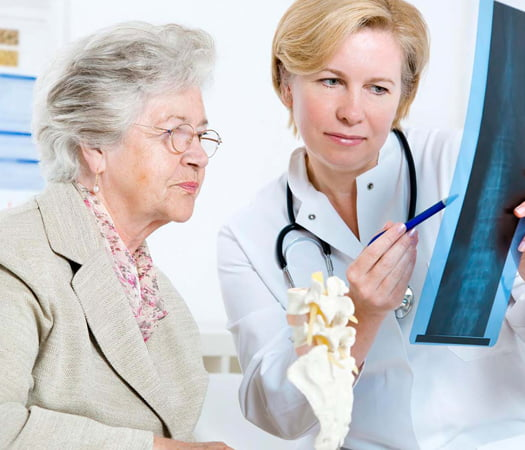

Научно-практическая конференция «Остеопороз — болезнь современной цивилизации»
Специализированный online-сервис для проведения конференций ‒ zoom.us
Организаторы:
- Министерство здравоохранения Нижегородской области
- Областной центр профилактики и лечения остеопороза
- НРОО «Ассоциация организаторов здравоохранения»
- Специализированное издание ‒ газета «Мир фармации и медицины»
Научный координатор:
- Смирнова Наталия Валентиновна ‒ руководитель Областного центра профилактики и лечения
остеопороза на базе ГБУЗ НО «Городская клиническая больница № 3».
Тел. (831) 436-54-57, e-mail: nets1971@ya.ru.
Основные направления работы конференции:
- Рентгенологическая и лабораторная диагностика остеопороза.
- Определение риска переломов. Что нужно для постановки диагноза?
- Ювенильный остеопороз: причины, симптомы, лечение.
- Роль витаминов и минеральных веществ в профилактике остеопении у детей.
- Гиподинамия как один из факторов развития остеопороза.
- Профилактика остеопороза: как предотвратить заболевание?
- Роль заместительной гормональной терапии в профилактике остеопороза у женщин.
- Препараты кальция и витамина D. Какой выбрать?
- Проблемы неэффективности лечения остеопороза.
- Глюкокортикостероидный остеопороз: особенности терапии.
- Феномен остеопоротической боли.
- Ортопедическая коррекция. Физиотерапия пациентов с переломами.
Дополнительная техническая информация
Мероприятие соответствует требованиям для НМО. Кредитов 5.
К участию в конференции приглашаются врачи акушеры-гинекологи, диетологи, неврологи, общей врачебной практики (семейные врачи), ревматологи, терапевты, физиотерапевты, эндокринологи и другие заинтересованные специалисты.
Участие специалистов бесплатное.
Вниманию онлайн-участников!
- Для участия в мероприятии необходимо скачать и установить приложение ZOOM. Приложение поддерживается любым устройством (персональный компьютер, ноутбук, планшет, смартфон) и совместимо с любой операционной системой, также возможна работа напрямую через браузер.
- Для просмотра трансляции с возможностью получения баллов НМО — предварительная регистрация обязательна.
- Непосредственно перед началом видеоконференции участники, прошедшие предварительную регистрацию, получают уникальную ссылку для входа в конференц-комнату за 1 день до мероприятия и за 30 минут в день мероприятия.
- В день мероприятия войдите в приложение, введите идентификатор, подождите, когда организатор подтвердит вашу заявку, и начните просмотр.
- Время присутствия контролируется по автоматическому отчету, генерируемому порталом трансляции.
Контроль присутствия на мероприятии осуществляется путем нажатия слушателем на «всплывающее окно». Периодичность проверки присутствия происходит с разными временными промежутками. Интервал времени подтверждения присутствия участником составляет 3 минуты. Задержка с подтверждением более 3 минут будет считаться как «отсутствие» обучающегося (для участников НМО) на трансляции.
Минимально допустимое время присутствия ‒ 285 минут.
Количество контролей ‒ 6.
Количество подтверждений ‒ минимум 5.